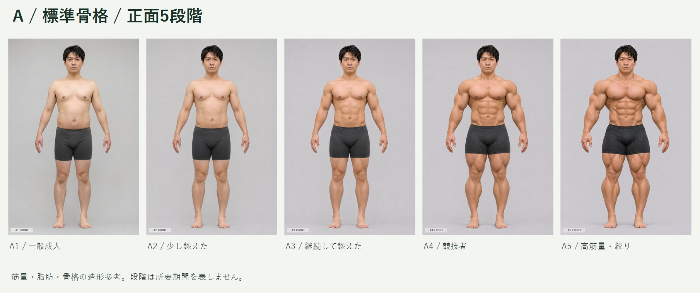
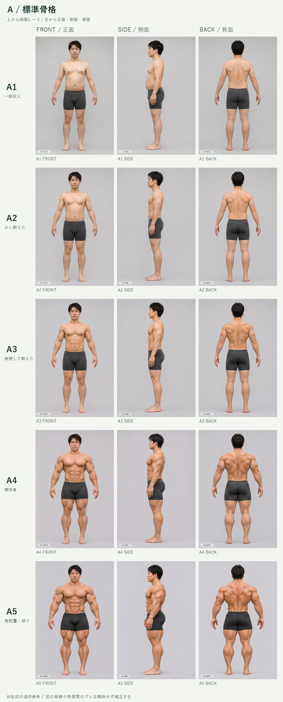
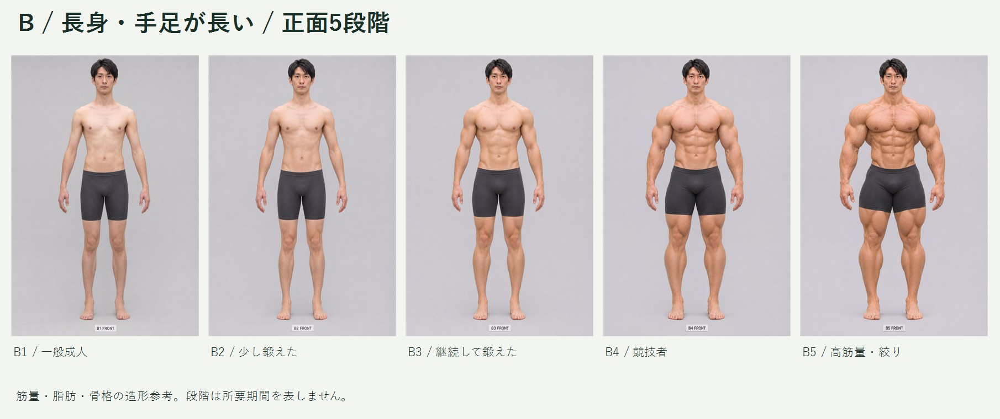
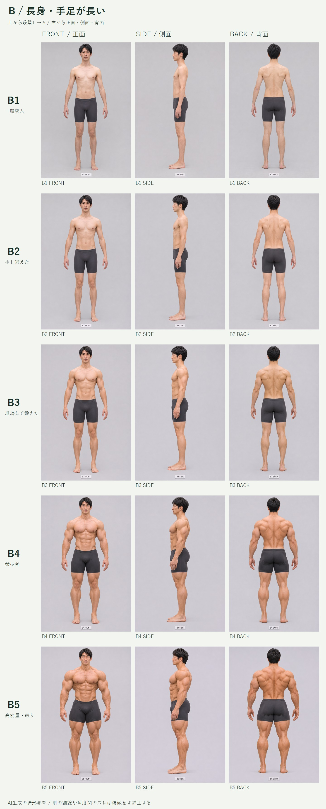
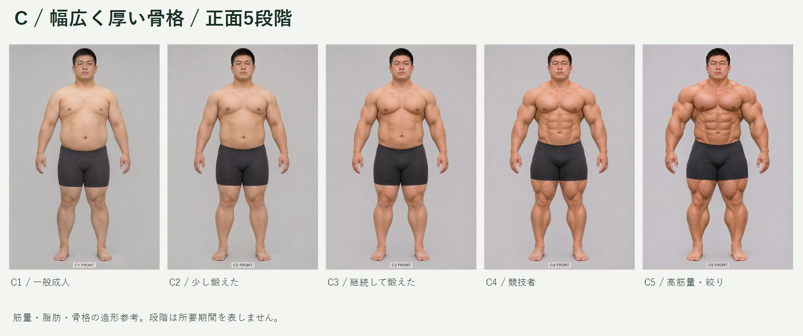
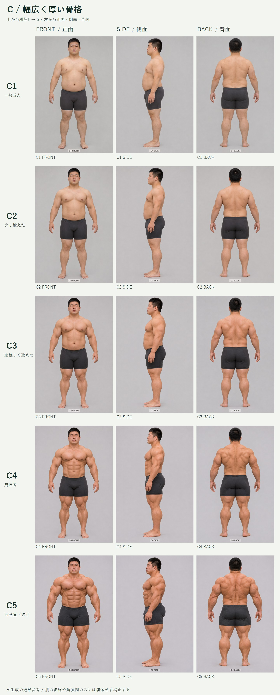
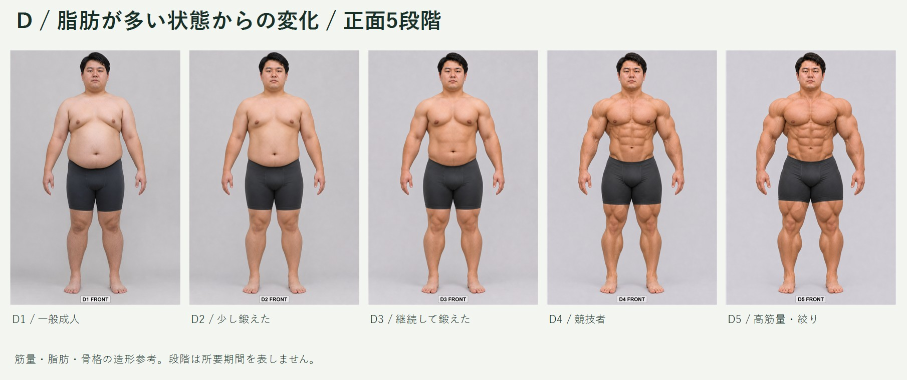
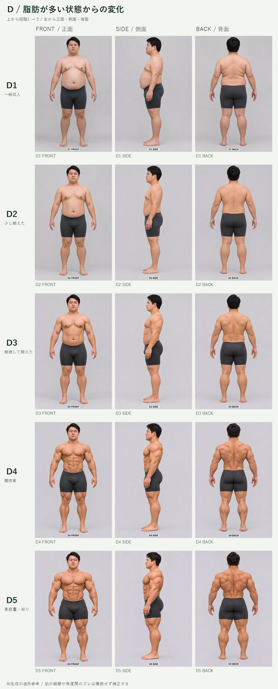

4パターン × 5段階 × 正面・側面・背面。各パターンの一覧は、上から段階1→5、左から正面→側面→背面。
AI生成の造形参考です。実写・身体計測資料ではありません。画像間のズレや全身の細かい線をそのまま模倣せず、同一骨格で成立する人体へ整えてください。段階は成長期間や体脂肪率を示しません。


| 段階 | 正面 | 側面 | 背面 |
|---|---|---|---|
| 1：一般成人 | A1 FRONT | A1 SIDE | A1 BACK |
| 2：少し鍛えている | A2 FRONT | A2 SIDE | A2 BACK |
| 3：継続して鍛えている | A3 FRONT | A3 SIDE | A3 BACK |
| 4：ボディービルダー | A4 FRONT | A4 SIDE | A4 BACK |
| 5：高筋量・絞れた競技者 | A5 FRONT | A5 SIDE | A5 BACK |


| 段階 | 正面 | 側面 | 背面 |
|---|---|---|---|
| 1：一般成人 | B1 FRONT | B1 SIDE | B1 BACK |
| 2：少し鍛えている | B2 FRONT | B2 SIDE | B2 BACK |
| 3：継続して鍛えている | B3 FRONT | B3 SIDE | B3 BACK |
| 4：ボディービルダー | B4 FRONT | B4 SIDE | B4 BACK |
| 5：高筋量・絞れた競技者 | B5 FRONT | B5 SIDE | B5 BACK |


| 段階 | 正面 | 側面 | 背面 |
|---|---|---|---|
| 1：一般成人 | C1 FRONT | C1 SIDE | C1 BACK |
| 2：少し鍛えている | C2 FRONT | C2 SIDE | C2 BACK |
| 3：継続して鍛えている | C3 FRONT | C3 SIDE | C3 BACK |
| 4：ボディービルダー | C4 FRONT | C4 SIDE | C4 BACK |
| 5：高筋量・絞れた競技者 | C5 FRONT | C5 SIDE | C5 BACK |


| 段階 | 正面 | 側面 | 背面 |
|---|---|---|---|
| 1：一般成人 | D1 FRONT | D1 SIDE | D1 BACK |
| 2：少し鍛えている | D2 FRONT | D2 SIDE | D2 BACK |
| 3：継続して鍛えている | D3 FRONT | D3 SIDE | D3 BACK |
| 4：ボディービルダー | D4 FRONT | D4 SIDE | D4 BACK |
| 5：高筋量・絞れた競技者 | D5 FRONT | D5 SIDE | D5 BACK |